THE LONG RUNNEW YORK
RETURN00000
HORIZON00:00
PACE1.00×
2×The longrun.
Climb the bull run. Ride the sell-off.
Deflate the hype. Ring the listing bell.
NEW YORKThree chapters. One long view.
1P
Getting the city ready…
PLAYER SELECT NICOLAITHE ORIGINAL · SOMERSAULT & SIDE SLIDE
THE NOISEMarkets react to markets reacting.
NEW YORK · AFTER HOURSMARKET OPEN
A MOMENT OF COMPOSUREThe city
can wait.
Your run is paused.
QUARTERLY PERFORMANCE REVIEWA challenging
quarter.
TOTAL RETURN0
TIME IN THE MARKET00:00
↻
NEW YORK NEEDS A LITTLE ROOMTurn your
phone.
Play in landscape.
Two thumbs. The whole city.